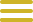

<!DOCTYPE html>
<html lang="fr" x-data="{ menuIsOpen:false }"></html>
<head>
    <meta charset="UTF-8">
    <meta http-equiv="X-UA-Compatible" content="IE=edge">
    <meta name="viewport" content="width=device-width, initial-scale=1.0">
    
    <link rel="preconnect" href="https://fonts.googleapis.com">
    <link rel="preconnect" href="https://fonts.gstatic.com" crossorigin>
    <link href="https://fonts.googleapis.com/css2?family=Italiana&family=Italianno&display=swap" rel="stylesheet">
    
    <script defer src="https://unpkg.com/alpinejs"></script>


    <link rel="stylesheet" href="../src/css/menu.css">
    <link rel="stylesheet" href="../src/css/normalize.css">
    <link rel="stylesheet" href="../src/css/main.css">
    <link rel="stylesheet" href="../src/css/carrousel.css">
    <title>La Création d’Adam</title>
</head>
<body>
    <header class="main-head">

        <button class="header_menu btndumenu" @click="menuIsOpen = ! menuIsOpen">
            
        </button>
        <nav id="mainNav" x-show="menuIsOpen" x-transition.duration.800ms class="menu">
    
            <button class="icon_cross_menu imgcross" @click="menuIsOpen = ! menuIsOpen">
                
            </button>
            <ul class="liste_li">
                <li><a href="../fr/index.html" style="color: #CEB428" class="textmenu"><h1>Accueil</h1></a></li>
                <hr>
                <li><a href="../fr/billetterie.html" style="color: #CEB428" class="textmenu"><h1 class="textmenu">Billetterie</h1></a></li>
                <hr>                  
                    <section x-data="{open:false}">
                        <li><a style="color: #CEB428" @click="open = !open" class="textmenu"><h1>Artistes</h1></a></li>
                        <hr>                      
                            <h2 x-show="open" x-transition.duration.700ms>                      
                                <a href="billeterie.html" class="text_accordeon">                        
                                    <li><a href="../fr/michel-ange.html" style="color: #CEB428" class="textmenu1"><p class="textmenu1">Michel-Ange</p></a></li>
                                    <li><a href="../fr/leonard-de-vinci.html" style="color: #CEB428" class="textmenu1"><p class="textmenu1">Léonard de Vinci</p></a></li>
                                    <li><a href="../fr/giovanni-bellini.html" style="color: #CEB428" class="textmenu1"><p class="textmenu1">Giovanni Bellini</p></a></li>
                                    <li><a href="../fr/jules-romain.html" style="color: #CEB428" class="textmenu1"><p class="textmenu1">Jules Romain</p></a></li>                  
                                </a>     
                            </h2>
                    </section>
            </ul>
            <ul class="liste_liii">
                <li><a href="../fr/contact.html" style="color: #CEB428"  class="textmenu"><h1>Contact</h1></a></li>
                <hr>
            </ul> 
        </nav>


            <div class="headder-text">
                <a href="../fr/index.html">
            <h1>Renaissance </br>Italienne</h1>
            </div>
                </a>
    </header>

    <h2>La création d’Adam </br></br>(1512)</h2>

    <div class="image-portrait">
        
    </div>

    <p>La Création d'Adam est l'une des neuf fresques inspirées du livre de la Genèse, 
        peintes par Michel-Ange sur la partie centrale de la voûte du plafond de la chapelle Sixtine, 
        dans les musées du Vatican à Rome, commandée par le pape Jules II. Elle constitue la quatrième histoire 
        de cette série de neuf, précédée par La Séparation des terres et des eaux, et suivie par La Création d'Ève. 
        Bien qu'évoquée relativement tôt dans la Genèse, donc dans la séquence des fresques ornant la voûte, 
        La Création d'Adam n'a été achevée par Michel Ange que tardivement, vers 1511, alors que l'exécution de 
        la voûte centrale dura de 1508 à 1512.
    </p>

    <p>La Création d'Adam est une illustration du texte biblique du livre de la Genèse : 1, 26-27 : 
        « Dieu créa l'homme à son image, à l'image de Dieu il le créa ». L’œuvre est particulièrement célèbre par le détail 
        dans lequel l'index de Dieu, rejoignant celui d'Adam sans le toucher, donne vie à l'Homme. 
        C'est l'épisode le plus célèbre de la Chapelle Sixtine et l'une des icônes les plus célèbres et célébrées de l'art 
        universel, le sujet d'innombrables citations, hommages et parodies.
    </p>

    <div class="accordeon">
        <section>
          <div x-data="{ open: false }">
            <button class="favorite styled" @click="open = ! open">
                <div class="texte-bouton">L'artiste</button>
         
            <span x-show="open" x-transition>
                <a href="../fr/michel-ange.html">
                    <h4>Michel-Ange</h4>
                </a>
            </span>
        </div>
        </section>


        <div class="accordeon">
            <section>
              <div x-data="{ open: false }">
                <button class="favorite styled" @click="open = ! open">
                    <div class="texte-bouton">Autres oeuvres de l’artiste</button>
             
                <span x-show="open" x-transition>
                    <a href="../fr/jugement-dernier.html">
                        <h4>- Le Jugement dernier</h4>
                    </a>
                </span>
            </div>
            </section>

            <a href="../fr/frise.html">
                <button class="favorite styled"
                type="button">
                <div class="texte-bouton">
                    Frise
                </div>
                </button>
            </a>

            
    <footer>
        <a href="../fr/contact.html">
            <h2>Nous contacter</h2>
        </a>

        <a href="https://www.fondationcartier.com/">
            <h2>Fondation Cartier, 261 Bd Raspail, 75014 Paris</h2>
        </a>
        <a href="https://twitter.com/?lang=fr"></a>
        <a href="https://www.instagram.com/?hl=fr"></a>
        <a href="https://www.youtube.com/"></a>
        <a href="mailto:fondation-cartier@fondation.cartier.com"></a>
    </footer>
</body>
</html>